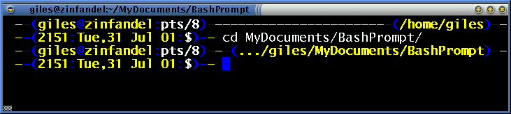

A friend complained that he didn't like having a prompt that kept changing size because it had $PWD in it, so I wrote this prompt that adjusts its size to exactly the width of your term, with the working directory on the top line of two.
#!/bin/bash
# termwide prompt with tty number
# by Giles - created 2 November 98, last tweaked 31 July 2001
#
# This is a variant on "termwide" that incorporates the tty number.
#
hostnam=$(hostname -s)
usernam=$(whoami)
temp="$(tty)"
# Chop off the first five chars of tty (ie /dev/):
cur_tty="${temp:5}"
unset temp
function prompt_command {
# Find the width of the prompt:
TERMWIDTH=${COLUMNS}
# Add all the accessories below ...
local temp="--(${usernam}@${hostnam}:${cur_tty})---(${PWD})--"
let fillsize=${TERMWIDTH}-${#temp}
if [ "$fillsize" -gt "0" ]
then
fill="-------------------------------------------------------------------------------------------------------------------------------------------"
# It's theoretically possible someone could need more
# dashes than above, but very unlikely! HOWTO users,
# the above should be ONE LINE, it may not cut and
# paste properly
fill="${fill:0:${fillsize}}"
newPWD="${PWD}"
fi
if [ "$fillsize" -lt "0" ]
then
fill=""
let cut=3-${fillsize}
newPWD="...${PWD:${cut}}"
fi
}
PROMPT_COMMAND=prompt_command
function twtty {
local WHITE="\[\033[1;37m\]"
local NO_COLOUR="\[\033[0m\]"
local LIGHT_BLUE="\[\033[1;34m\]"
local YELLOW="\[\033[1;33m\]"
case $TERM in
xterm*|rxvt*)
TITLEBAR='\[\033]0;\u@\h:\w\007\]'
;;
*)
TITLEBAR=""
;;
esac
PS1="$TITLEBAR\
$YELLOW-$LIGHT_BLUE-(\
$YELLOW\$usernam$LIGHT_BLUE@$YELLOW\$hostnam$LIGHT_BLUE:$WHITE\$cur_tty\
${LIGHT_BLUE})-${YELLOW}-\${fill}${LIGHT_BLUE}-(\
$YELLOW\${newPWD}\
$LIGHT_BLUE)-$YELLOW-\
\n\
$YELLOW-$LIGHT_BLUE-(\
$YELLOW\$(date +%H%M)$LIGHT_BLUE:$YELLOW\$(date \"+%a,%d %b %y\")\
$LIGHT_BLUE:$WHITE\$$LIGHT_BLUE)-\
$YELLOW-\
$NO_COLOUR "
PS2="$LIGHT_BLUE-$YELLOW-$YELLOW-$NO_COLOUR "
}
|

The twtty prompt in action.